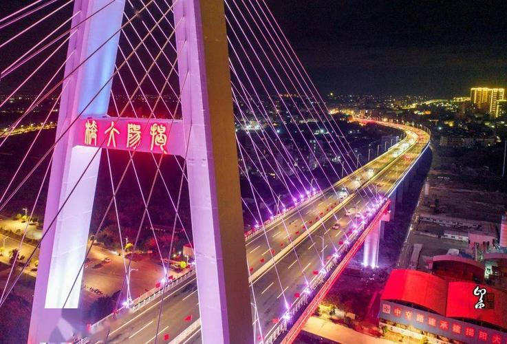
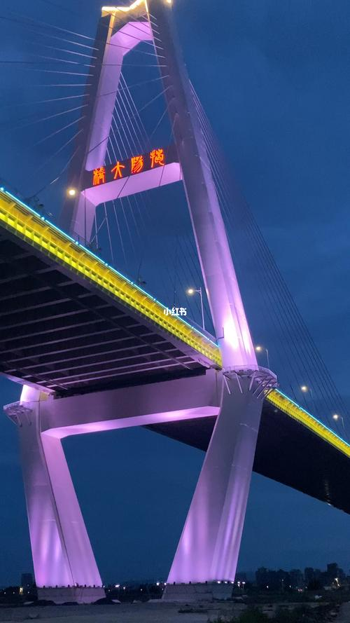
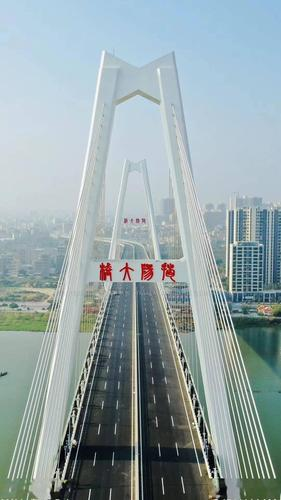

个人主页
个人信息
作品1
作品2
作品3
首页
风景
文化
揭阳大桥位于广东省揭阳市区，跨越榕江南河，北接榕城区榕东，南连榕城仙桥，该桥为双塔双索面，桥梁最高建筑为南北岸桥塔，主塔两侧各布置12对斜拉索，各高120米。
揭阳大桥作为揭阳当地桥梁建设史上最高的桥梁项目，又是揭惠高速公路揭阳市区连接线1标项目，备受关注。
揭阳大桥通车后将提高榕江南河两岸居民的交通通达度，对揭阳市区和沿途潮阳惠来居民的高速出行也将带来极大的便利。


